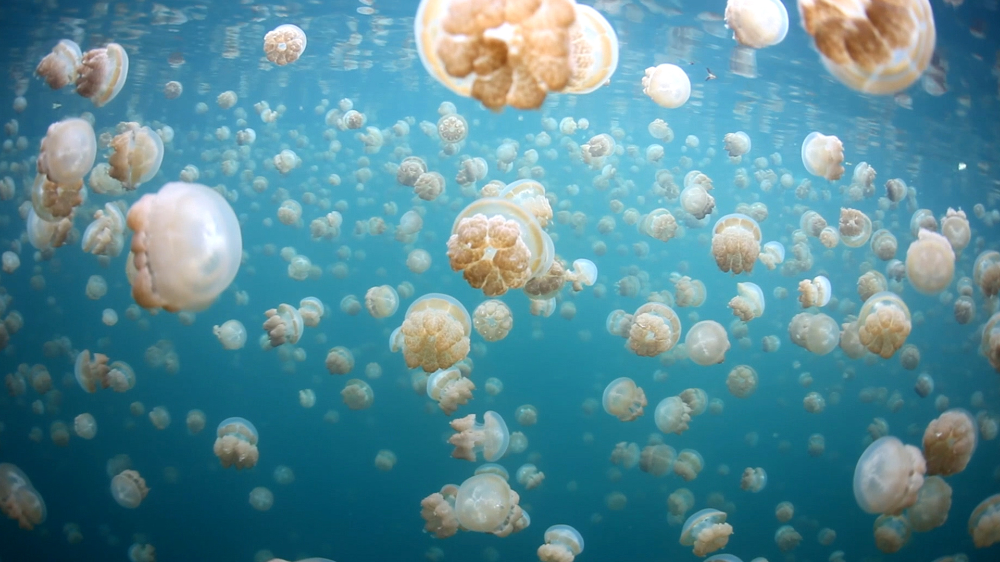
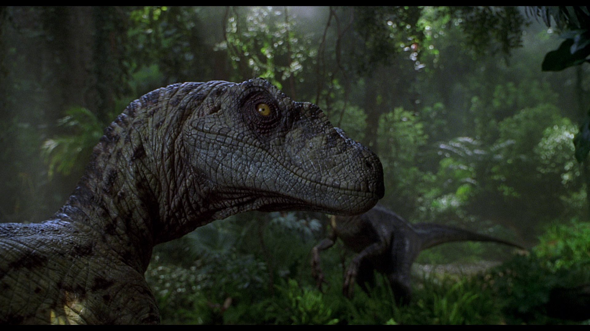

DOG

Cats are similar in anatomy to the other felids, with a strong, flexible body, quick reflexes, sharp retractable claws, and teeth adapted to killing small prey. Cat senses fit a crepuscular and predatory ecological niche. Cats can hear sounds too faint or too high in frequency for human ears, such as those made by mice and other small animals. They can see in near darkness.
JELLYFISH
Large, often colorful, jellyfish are common in coastal zones worldwide. Jellyfish have roamed the seas for at least 500 million years, and possibly 700 million years or more, making them the oldest multi-organ animal.
RAPTOR
Smaller than other dromaeosaurids like Deinonychus and Achillobator, Velociraptor nevertheless shared many of the same anatomical features. It was a bipedal, feathered carnivore with a long tail and an enlarged sickle-shaped claw on each hindfoot, which is thought to have been used to tackle prey. Velociraptor can be distinguished from other dromaeosaurids by its long and low skull, with an upturned snout.